투자·산업
"삼성 반도체 설계도 클로드로 자동화 지원"
최기영 앤트로픽코리아 대표(사진)는 최근 서울 강남구 앤트로픽코리아 사무실에서 매일경제 와... 앤트로픽은 지난 7월 미국에서 열린 'K- AI 서밋'에서 SK텔레콤과 국내에 기가와트(GW)급 AI 데이터센터 구축을 위한... — 동향 단계의 사안으로 AI 데이터센터·전력 인프라 사업 기회 관점에서 사업·기술 파급 범위을(를) 점검할 필요가 있습니다.
출처 매일경제09.01
AI디자인랩이 매주 전하는 경영진용 Trend & Insight
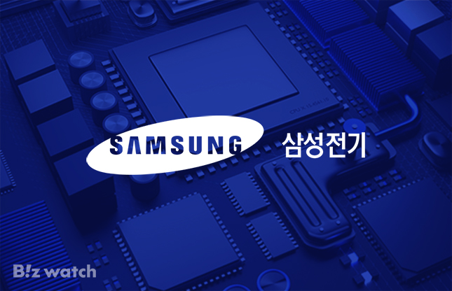
장기계약 3.3조…고부가 전환 가속 AI 데이터센터 투자가 확대되면서 시장도 빠르게 커지고 있다. 골드만삭스는 글로벌 AI 서버용 MLCC 시장이 지난해 14억달러에서 2030년 58억달러로 성장할 것으로 전망했다. 연평균...
현대건설 시사점 — '계약' 단계까지 확인된 사안으로 AI 데이터센터·전력 인프라 사업 기회 관점에서 후속 발주·계약 조건과 경쟁 구도을(를) 점검할 필요가 있습니다.
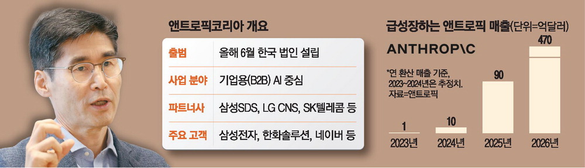
최기영 앤트로픽코리아 대표(사진)는 최근 서울 강남구 앤트로픽코리아 사무실에서 매일경제 와... 앤트로픽은 지난 7월 미국에서 열린 'K- AI 서밋'에서 SK텔레콤과 국내에 기가와트(GW)급 AI 데이터센터 구축을 위한... — 동향 단계의 사안으로 AI 데이터센터·전력 인프라 사업 기회 관점에서 사업·기술 파급 범위을(를) 점검할 필요가 있습니다.
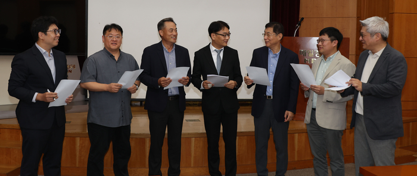
인공지능( AI ) 인프라의 판이 바뀌고 있다. 그래픽처리장치(GPU) 한 종류로 데이터센터 를 채우던 시대가... 매일경제 는 과기정통부와 함께 지난 18일 서울 중구 매경미디어 센터 에서 ‘ AI 반도체 대전환’을 주제로 전문가... — 동향 단계의 사안으로 AI 데이터센터·전력 인프라 사업 기회 관점에서 사업·기술 파급 범위을(를) 점검할 필요가 있습니다.
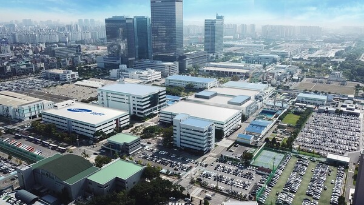
AI 서버용 제품은 고온·고전압 환경에서 하루 24시간 가동을 견뎌야 해 일반 전자 기기 용보다 높은 용량과... 서버를 안정적으로 작동시키는 커패시터와 기판, 전력 ·냉각장치까지 공급망을 확보해야 데이터센터 ... — '계약' 단계까지 확인된 사안으로 AI 데이터센터·전력 인프라 사업 기회 관점에서 후속 발주·계약 조건과 경쟁 구도을(를) 점검할 필요가 있습니다.
AI가 로봇과 함께 배와 자동차를 만들고, 전력망 과 도시 관리에 투입될수록 현장의 공정 데이터 와 숙련자의... 현대차그룹은 정부·전북과 투자협약을 맺고 AI와 데이터센터 , 로봇, 태양광, 수소도시 등에 약 9조원을... — 동향 단계의 사안으로 AI 데이터센터·전력 인프라 사업 기회 관점에서 사업·기술 파급 범위을(를) 점검할 필요가 있습니다.
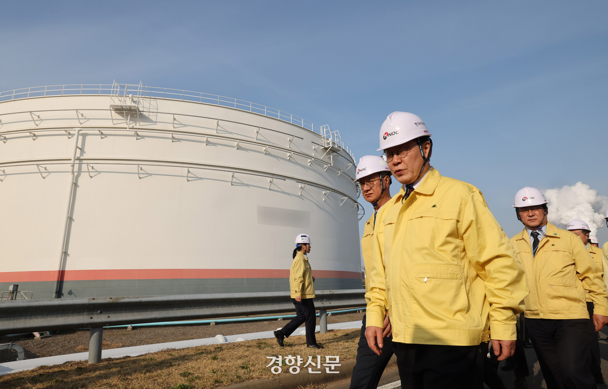
AI 데이터센터 (AIDC) 소재·부품·장비 생태계 육성을 위한 사업도 신설됐다. 수요기업과 연계한 차세대 전력 ·냉각공조 등 핵심기술 개발에 390억원, 구축·운영에 필요한 현장 전문인력 양성에 40억원이 배정됐다.... — 동향 단계의 사안으로 AI 데이터센터·전력 인프라 사업 기회 관점에서 사업·기술 파급 범위을(를) 점검할 필요가 있습니다.
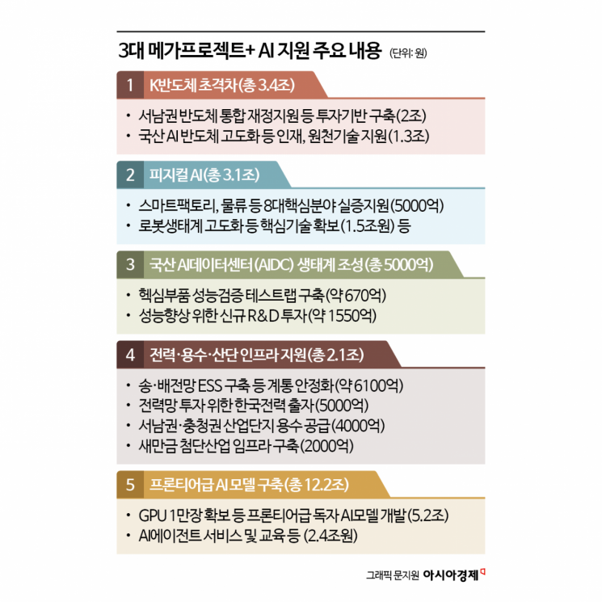
약 4조원을 편성해 최상위급 그래픽처리장치( GPU ) 1만장을 확보한다. 피지컬 AI 현장 실증과 핵심기술 개발에 2조원을 배정했다. 반도체와 피지컬 AI, AI 데이터센터 (AIDC)를 핵심축으로 삼고 전력·용수·산업단지... — 동향 단계의 사안으로 AI 데이터센터·전력 인프라 사업 기회 관점에서 사업·기술 파급 범위을(를) 점검할 필요가 있습니다.
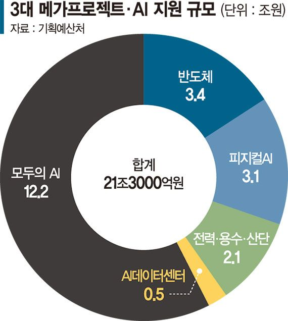
국산 AI 데이터센터 (AIDC) 산업생태계 조성을 위해서는 AIDC 핵심부품의 성능 검증을 위한 신규 테스트랩을... AIDC 서버· 전력 ·냉각 등 소재·부품·장비 성능향상을 위한 신규 R&D 투자(1545억원)도 추진한다. 전력 ... — 동향 단계의 사안으로 AI 데이터센터·전력 인프라 사업 기회 관점에서 사업·기술 파급 범위을(를) 점검할 필요가 있습니다.
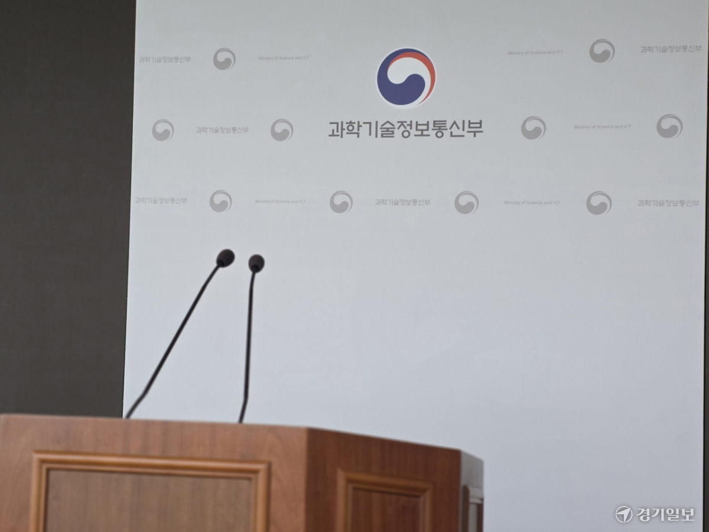
AI 데이터센터 (AIDC) 클러스터 조성과 산업 육성에 878억원, 소부장·클라우드 기술 개발 및 고도화에 1천155억원을 신규 투입한다. 피지컬 AI 분야에서도 트레이닝센터 구축 400억원, 핵심기술 R&D 550억원, 실증·확산... — 동향 단계의 사안으로 AI 데이터센터·전력 인프라 사업 기회 관점에서 사업·기술 파급 범위을(를) 점검할 필요가 있습니다.
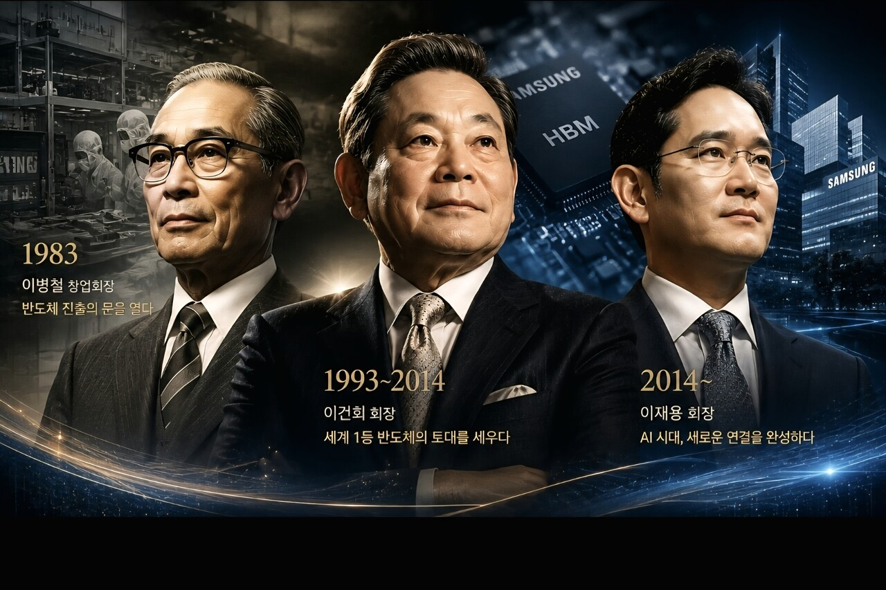
이재명 정부 역시 800조원 규모의 반도체 투자와 대규모 AI 데이터센터 , 전력 망 확충, 정책금융을 동시에... PC 시대의 핵심 문제가 데이터 를 저장하는 것이었다면 스마트폰 시대에는 작은 기기 안에서 계산과 통신... — 동향 단계의 사안으로 AI 데이터센터·전력 인프라 사업 기회 관점에서 사업·기술 파급 범위을(를) 점검할 필요가 있습니다.
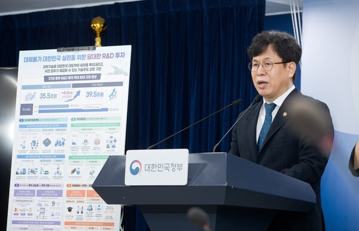
AI 분야에서는 세계 최고 수준의 AI 모델과 피지컬 AI, AI 데이터센터 기술을 확보하고 산업 전반의 AI 전환(AX)을 지원한다. 정부는 이를 토대로 글로벌 AI 경쟁력을 3위까지 높이고 피지컬 AI 분야에서는 세계 최상위권에... — 동향 단계의 사안으로 AI 데이터센터·전력 인프라 사업 기회 관점에서 사업·기술 파급 범위을(를) 점검할 필요가 있습니다.
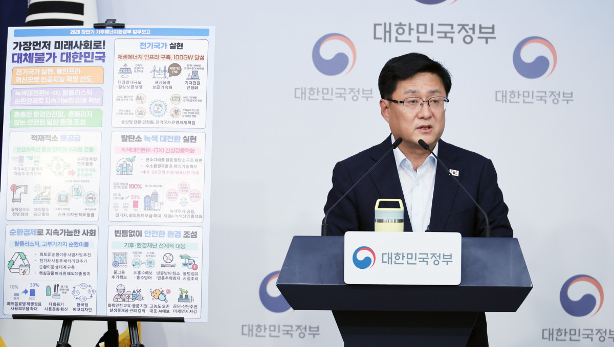
반도체와 인공지능( AI ) 데이터센터 등 국가 첨단산업의 필수 인프라인 전력·용수 공급에 1조9000억원 이상을 투입하고, 전기차와 재생에너지 중심의 녹색 전환을 전폭 지원한다. 기후에너지환경부는 미래대응기금... — 동향 단계의 사안으로 AI 데이터센터·전력 인프라 사업 기회 관점에서 사업·기술 파급 범위을(를) 점검할 필요가 있습니다.